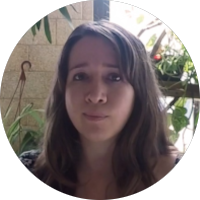
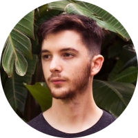
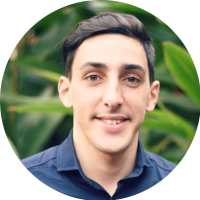

Acerca de MURU 7.8
Somos semillas en agenciamiento electromagnético con la tierra y en resonancia con las diversas comunidades terrestres. Cristalizamos las turbulencias vitales de diversas entidades y sus códigos de vida en universos sintéticos y fenomenológicos.
Mururear es aprender de todas las formas de la materia viviente. Investigamos los sistemas biológicos y naturales para desarrollar obras / matrices de pensamiento con dispositivos tecnológicos. Nuestra intención se vuelve una búsqueda hacia nuevos sistemas de cooperación.
MURU 7.8 proviene del Quechua Muru que significa semilla y el número 7.8 que corresponde a una frecuencia extremadamente baja dentro del espectro del campo electromagnético de la Tierra. En la teoría de la resonancia de Schumann se menciona el efecto de las ondas electromagnéticas existentes en el sistema tierra-aire-ionosfera y como algunas de estas frecuencias entre ellas 7.8 hz entran en sintonía con fenómenos naturales que posibilitan la vida. Desde el 2014, se ha encontrado una aceleración en dicha frecuencia debido a cambios dinámicos en la atmósfera y el campo electromagnético terrestre.
Murureantes
Guadalupe Chávez Pardo
(n 1985, Nayarit, México) Artista, docente e investigadora. Licenciada en Artes Plásticas (UGTO-MX). Maestranda en Tecnología y Estética de las Artes Electrónicas, UNTREF. Es tutora artística de la plataforma educativa transdiciplinaria Mala Praxis, UNTREF. Co-fundadora del Colectivo Electrobiota, integrante del grupo artístico Muru 7.8 y del Laboratorio de Geopoéticas Subalternas, UNTREF. Beneficiaria del Programa de Estímulos a la Creación y Desarrollo Artístico por FECAN, México. Recibió Mención honorífica en Fotografía, Forum Cultural Guanajuato, Mx. Y en la 3era Bienal Kosice (2014). Primer lugar en el 2° Premio UNTREF a las Artes Electrónicas de la UNTREF (2016). Su práctica artística, traza lazos con la vida vegetal desde cosmovisiones ancestrales y los vínculos afectivos de las relaciones interespecies. Ha realizando una serie de prácticas, muestras, talleres y charlas para familias y adultes.
Nic Motta
(n 1994 - Buenos Aires, Argentina) Artista, docente, investigador. Estudió Artes Visuales (UNA) y cursa la Maestría en Tecnologías y Estéticas de las Artes Electrónicas (UNTREF) Le interesa la relación entre lo visual y lo sonoro, encontrar y analizar la geometría de estos universos potenciado por un desarrollo electro-digital. Desarrollador de programación visual, modelado e impresión 3D, video mapping e interfaces y sensados. Actualmente aborda la inteligencia artificial y algoritmos para conectar y representar diferentes espacios a través del dato numérico. Es parte de los grupos artísticos colaborativos MURU 7.8 y Transelectronicxs Premiado en ArCiTec (2018) , el Festival de videoarte Proyector, España (2018). Expuso en Bienalsur 2019 (Buenos Aires/ Costa Rica), España, Colombia y Brasil.
Leandro Barbeito
(n 1993, Buenos Aires, Argentina) Docente y desarrollador de dispositivos hardware programable para empresas y proyectos artísticos. Es profesor de robótica educativa en escuela integral Maimónides y en DGCYE (educación de la provincia de Buenos Aires). Fue técnico comercial en Patagonia Tecnology. Actualmente trabaja en Smile Latam encargado del área de software y hardware. Actualmente coordina los grupos artísticos MURU 7.8. Premiado en Bienal Kosice (2014, 2015) y ArCiTec (2018), Seleccionada para el Premio a las Artes Electrónicas UNTREF (2016). Expuso en Bienalsur 2019 (Buenos Aires/ Costa Rica).
Claudia Valente

(n 1965, Buenos Aires, Argentina) Artista, docente e investigadora. Magister en Tecnología y Estética de las Artes Electrónicas (UNTREF). Licenciada en artes visuales (UNA). Su producción artística abarca proyectos intermediales con enfoques geopolíticos en autorías colaborativas. Actualmente coordina los grupos artísticos MURU 7.8 y Transelectronicxs. Premiada en Bienal Kosice (2014, 2015) y ArCiTec (2018). Seleccionada por el Premio a las Artes Electrónicas UNTREF (2016) y en el Festival de videoarte Proyector, España (2018). Expuso en Bienalsur 2019 (Buenos Aires/ Costa Rica) y en el Simposio de artes contemporáneas Factors, Brasil. Realizó una residencia artística en DXARTS, Universidad de Washington e intercambios artísticos y docentes en universidades de Brasil y Costa Rica.